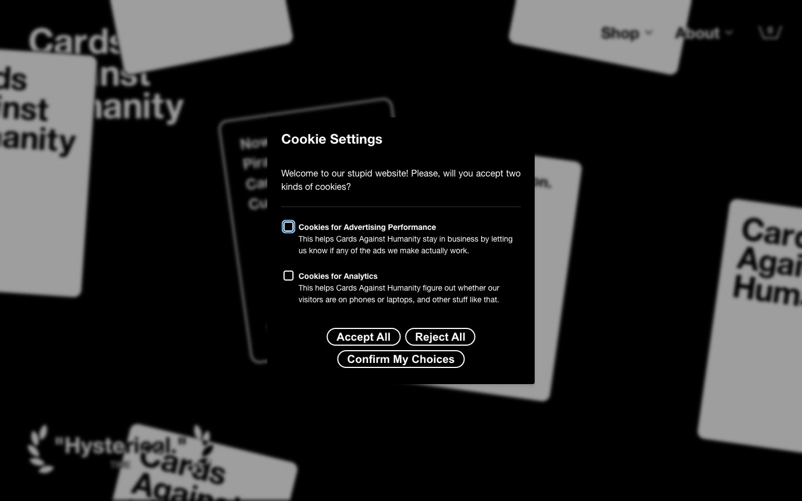

Cards Against Humanity 的 Design.md 主题展示，围绕游戏娱乐、媒体内容、趣味互动、暗色界面组织页面。
Explore Cards Against Humanity's dark Other design system: Midnight Ink #000000, Canvas White #ffffff colors, Helvetica Neue LT, Helvetica Neue typography,...

#fe2f2f: #fe2f2f#000000: #000000#ffffff: #ffffff#fffe5b: #fffe5b#7333f1: #7333f1#d7b73b: #d7b73b#ede5ff: #ede5ff#1b5bff: #1b5bff#a0e9ff: #a0e9ff#ffa0f0: #ffa0f0#b4ff91: #b4ff91#ff9559: #ff9559display: Helvetica Neue LTbody: Helvetica Neuemono: ui-monospacehints: Helvetica Neue LT,Helvetica Neue,ui-monospace